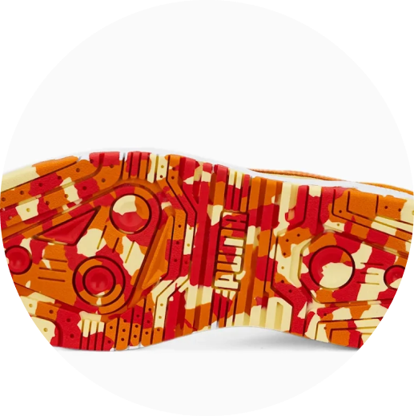

A coleção PUMA x POKÉMON é inspirada em alguns dos POKÉMON mais icônicos, e pegamos alguns de seus elementos instantaneamente reconhecíveis para dar a este Slipstream Lo um toque de DNA POKÉMON. Cores atraentes, gráficos impressionantes, detalhes inspirados em Charmander - está tudo aqui. Você vai pegar todos eles?

Detalhes:
- Cabedal de camurça
- Sola de borracha
- PUMA Formstrip nos lados medial e lateral
- Hangtag POKÉMON destacável
- Etiqueta POKÉMON na língua